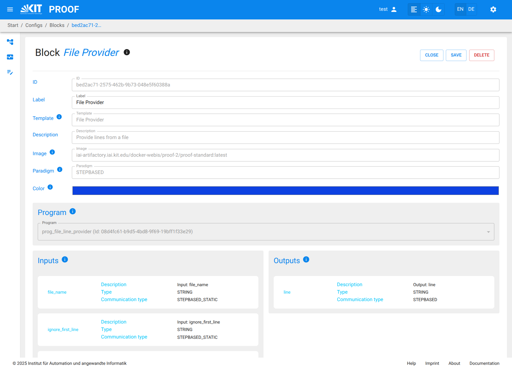
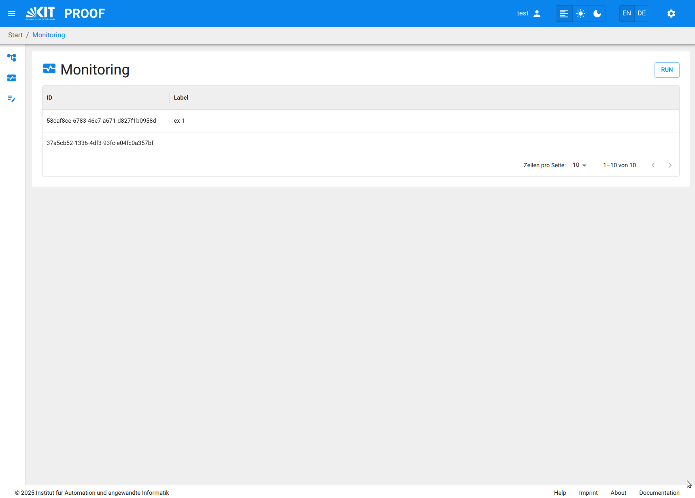

Create a Workflow in PROOF UI¶
On the proof UI, you can create new PROOF Workflows by selecting the Workflow Editor from the menu.
The Workflow Editor is the main interface for creating and managing Workflows in PROOF.
It provides a visual representation of the Workflow structure, allowing users to drag and drop Blocks, connect them, and configure their settings.
Add a new Workflow¶
- You can create a new Workflow by clicking on the "+" button in the Workflow Editor to the right of the Workflow combo box .
- This opens a new empty Workflow canvas where you can start building your Workflow.
Add PROOF Blocks to the Workflow from Block Templates¶
- You can drag and drop Block Templates from the right sidebar onto the Workflow canvas.
- Each Block Template represents a predefined specific functionality or model that can be used in the Workflow.
- A Block is created as an instance of the Block Template when it is added to the Workflow.
- The connectable inputs and outputs of each Block are represented by small circles on the left and right sides of the Block, respectively.
Connect Blocks¶
- You can connect Blocks by clicking on the output of one Block and dragging it to the input of another Block.
- This establishes a data flow between the Blocks, allowing them to communicate and share data.
- When trying to connect Blocks, only compatible input and output pins are connectable. Compatible pins have the same color and data type.

Configure Workflow Settings¶
- You can configure the settings of the Workflow by clicking on the "Settings" button in the top right corner of the Workflow Editor.
- This allows you to set ID, label, description, paradigm, and asynchronous Action for the entire Workflow.
- By clicking on the "save" button, the Workflow settings are saved.

Configure Block Settings¶
- You can configure the Name of each Block by clicking on it and accessing the Block configuration panel.
- It is not possible to change the basic functionality of a Block, as it is defined by the Block Template. It is possible to change nearly all Template attributes as well as the associated Program and Attachments using the Template Configuration panel. 
Save the Workflow¶
- Once you have built your Workflow, you must save it by clicking on the "Save" button in the top right corner of the Workflow Editor.
- This saves the Workflow to the PROOF database, making it available for execution and further editing.

Executing the Workflow via Workflow Editor¶
- After having saved the Workflow, you can execute it by navigating to the RUN button in the top right corner of the Workflow editor.
- You must enter all relevant Execution values in the pop-up execution dialog, such as Execution ID, Description, and other parameters specific to the Workflow.
Executing the Workflow via Monitoring Panel¶
- You can also start a saved Workflow from the Workflow Monitoring panel in the PROOF UI.
- Click the Workflow Monitoring menu item in the left menu bar to open the monitoring interface.
- Press the "RUN Workflow" button in the top right corner of the Workflow Monitoring interface. A Combo box appears listing all saved Workflows.
- Select the saved Workflow from the list and click on the "Start" button to initiate the execution.
- Enter all necessary attribute values in the pop-up execution dialog, such as Execution Label, Description, and all start values for the given Inputs.
- Monitor the execution progress and view results through the Workflow Monitoring interface. 